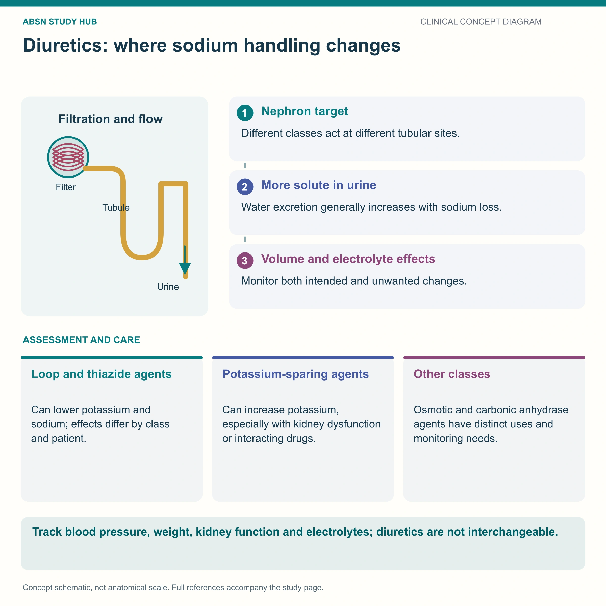

Hydrochlorothiazide (Microzide) · metolazone (Zaroxolyn) · chlorthalidone · indapamide
The blood-pressure diuretic. Thiazides block the Na⁺/Cl⁻ pump in the EARLY distal tubule, so sodium, chloride and water — plus potassium and magnesium — go out in the urine. The twist that gets tested: they hold on to CALCIUM, the exact opposite of a loop diuretic.
📄 Simple Nursing original — opens in Drive →
A smaller door than the loop’s — which is exactly why it is the gentle, long-term blood pressure drug.
Every diuretic alters the reabsorption or excretion of electrolytes and so alters fluid volume. The class name is really just an address on the nephron. The thiazide’s address is one segment downstream of the loop’s.

Only about 5–8% of filtered sodium is reabsorbed here — a small door. That is why a thiazide gives a steady, moderate diuresis instead of the loop’s flood, and why it is the one people stay on for years.
| Generic | Trade | Dose · route |
|---|---|---|
| Hydrochlorothiazide | Microzide | 12.5–100 mg/day in 1–2 doses · PO |
| Metolazone | Zaroxolyn | 2.5–5 mg/day · PO |
Also in this family: chlorthalidone (long acting) and indapamide — “thiazide-like.”
Four things fall, four things rise — and one line on the source card is worth correcting.
Losing Cl⁻ and H⁺ with the volume also produces a metabolic alkalosis, and losing salt faster than water can leave a true hyponatremia — the classic thiazide problem in older adults.
“These drugs may cause hypokalemia — monitor serum potassium levels.” Report a K⁺ under 3.5 mEq/L.
Straight from the source card — plus the reasons the source left out.
Unless the HCP says otherwise, push K⁺-rich foods: banana, orange juice, potato, sweet potato, spinach, avocado, beans, salmon.
A K⁺ supplement or a K⁺-sparing partner drug may be added — take exactly as ordered.
| With… | What happens |
|---|---|
| Allopurinol | Increased risk of hypersensitivity to allopurinol |
| Anesthetics | Increased anesthetic effect — tell the OR team |
| Antineoplastic drugs | Extended leukopenia |
| Antidiabetic drugs | Blunted effect → hyperglycemia |
| Digoxin | Hypokalemia → digoxin toxicity |
| Lithium | Lithium is retained → lithium toxicity |
| NSAIDs | Decreased diuretic effect |
| Corticosteroids | Additive potassium loss |
| Yellow dye (tartrazine) | Allergic reactions / bronchial asthma |
🧠 The one mnemonic for this page: hyper-GLUC, hypo-K
These newly drawn concept diagrams consolidate the retired illustration sets. The accompanying study notes and original handout links remain on this page.